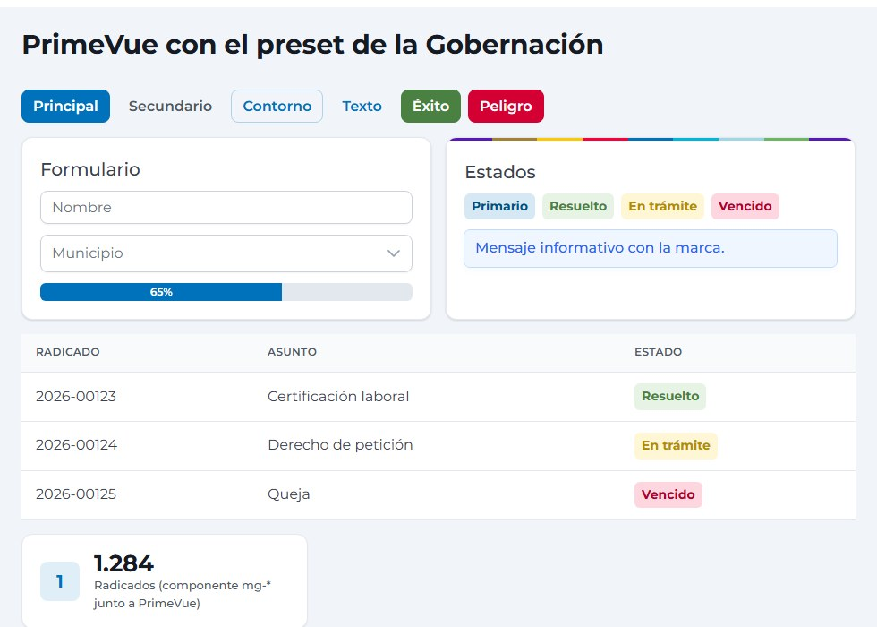

Cómo se mantienen estándar los componentes cuando los proyectos usan PrimeNG, Material, MUI u otros: una sola fuente de tokens, el mismo preset generado para cada librería y una familia de Web Components gob-* solo para lo que esas librerías no cubren.
01. Un origen, muchas salidas
colores · tipografía · radios · sombras
--mg-* / --gob-*Tailwind v3 / v4PrimeNG · PrimeVue (preset)Angular Material (M2/M3)MUI · VuetifyBootstrap · AdminLTEWeb Components gob-*Cambiar un color o un radio en tools/tokens.py actualiza, con un solo comando, el CSS, Tailwind, los temas de PrimeNG/PrimeVue, Material, MUI y Vuetify, y los Web Components. Así «el azul institucional» es el mismo en todos los proyectos.
02. Guía de decisión: qué usar y cuándo
| Necesito… | Use | Por qué |
|---|---|---|
| Maquetar, tipografía, botones, formularios en HTML plano, WordPress, PHP/Laravel, SSR | CSS mg-* (dist/css/magdalena.min.css) | Sin JavaScript ni build; mismo aspecto en cualquier stack. |
| Panel de administración en Angular: formularios, tablas, diálogos, menús | PrimeNG (versión MIT) + preset oficial | No reconstruimos lo que PrimeNG ya resuelve; el preset lo viste con la marca. |
| Panel en Vue | PrimeVue 4 + preset, o Vuetify + tema | Mismo preset; verificado con PrimeVue 4.5. |
| Aplicación en React / Next.js | MUI + tema, o CSS mg-* + Tailwind | Temas generados desde los mismos tokens. |
| Mapas, gráficas, indicadores, tableros — en cualquier framework o HTML plano | Web Components gob-* (/cdn/v1/) | PrimeNG no los trae con la marca ni con datos del Magdalena; funcionan igual en Angular, React, Vue o sin framework. |
| Algo exclusivo de un proyecto | Desarrollo local con los tokens | No se promueve a librería hasta que lo usen 2 proyectos. |
03. Evidencia: PrimeVue con el preset
El mismo preset (dist/primeng/magdalena-preset.mjs) aplicado a componentes reales de PrimeVue 4.5.5: botones, formularios, tabla, etiquetas y mensajes toman la marca, incluidos los colores de estado. Un componente mg-* (abajo a la izquierda) convive sin conflicto. El preset es el mismo para PrimeNG (el import cambia según la versión; ver cabecera del archivo).

04. Estados con el mismo nombre en todas partes
Para que un «éxito» o un «peligro» signifique lo mismo en Angular, Vue, Bootstrap o HTML plano:
| Estado | Token | PrimeNG / PrimeVue | Bootstrap / AdminLTE | CSS mg-* | Color de texto encima |
|---|---|---|---|---|---|
| Primario | --mg-color-primary | primary | primary | mg-btn | blanco |
| Éxito | --mg-color-success | success | success | --success | blanco (tono 700) |
| Aviso | --mg-color-warning | warn | warning | --accent | oscuro |
| Peligro | --mg-color-danger | danger | danger | --danger | blanco (tono 600) |
| Información | --mg-color-info | info | info | --cyan | oscuro |
| Secundario | --mg-color-secondary | secondary | secondary | --secondary | gris 700 |
05. Contrato de un componente gob-*
Lista de verificación que debe cumplir todo componente nuevo antes de entrar a la librería.
- Nombre: etiqueta
gob-<nombre>en español, singular (gob-mapa-magdalena,gob-grafica). - API: propiedades en
camelCasecon atributo enkebab-case; los datos complejos entran por propiedad (JSON), nunca por HTML. Todo configurable conel.config = {…}. - Eventos:
gob-<nombre>-<acción>,bubbles + composed, condetaildocumentado (el código DIVIPOLA es siempre la llave, nunca el nombre). - Tema: variables
--gob-<componente>-*con valores por defecto de la marca,::part()para lo estructural, temaclaro/oscuroy sin colores escritos a mano. - Accesibilidad (WCAG 2.1 AA / NTC 5854): teclado completo, roles ARIA, foco visible, alternativa en texto para lo gráfico, contraste ≥ 4.5:1,
prefers-reduced-motion. - Responsive e imprimible: de 320 px a 4K (container queries), CSS de impresión.
- Peso: bundle base < 50 KB gzip; librerías pesadas (ECharts, MapLibre) se cargan solo bajo demanda.
- Documentación: cuándo usar / cuándo no, demo en vivo, instalación (CDN, Angular, React/Next, Vue), propiedades, eventos, variables, accesibilidad e integración con la API NestJS.
- Calidad: axe-core sin violaciones, versionado semántico y ruta inmutable por versión mayor (
/cdn/v1/).
06. Licencias de las librerías de componentes
Atención con las versiones más recientes
PrimeNG 22 y PrimeVue 5 cambiaron a la PrimeUI License: exige clave de licencia y la modalidad gratuita aplica a organizaciones pequeñas (menos de 10 empleados y 5 desarrolladores, entre otros límites). Una entidad pública debería presupuestar la licencia comercial por desarrollador o mantenerse en las versiones MIT. Verificado en elLICENSE.md de cada paquete; confirme los términos vigentes en primeui.dev/licenses.| Librería | Versiones y licencia (LICENSE.md de cada paquete, verificado 2026-10) | Recomendación |
|---|---|---|
| PrimeNG | 17: MIT · 18, 19, 20, 21: «Community versions» MIT · 22: PrimeUI License (comercial; clave de licencia) | Fijar PrimeNG 21 (o ≤ 21). Antes de pasar a 22, consultar a TIC/Compras. |
| PrimeVue | 4.x: MIT · 5.x: PrimeUI License | Usar PrimeVue 4.5.x. |
@primeuix/themes (presets) | 1.x y 2.x: MIT · 3.x: PrimeUI License | Fijar ^2 (PrimeNG 21 / PrimeVue 4) o ^1 (PrimeNG 20). |
| Angular Material, Bootstrap, AdminLTE, Tailwind, Vuetify, Lit, Vite | MIT / BSD / Apache-2.0 | Sin restricciones para este uso. |
| MUI (core) | MIT; MUI X Pro/Premium son comerciales | Usar solo el núcleo. |
Esta es una verificación técnica del texto de la licencia, no asesoría legal.